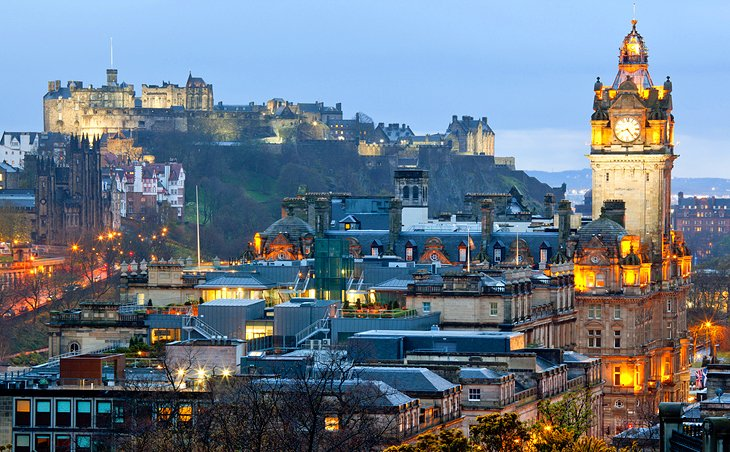
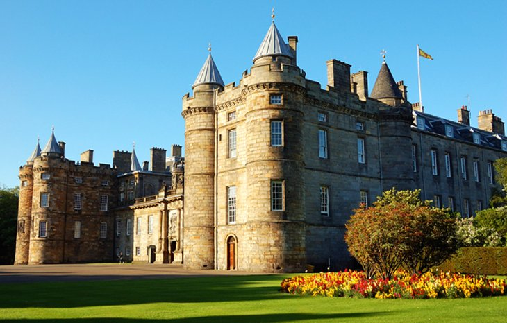

1.Edinburgh Castle
Scotland's most famous landmark, Edinburgh Castle is one of Britain's most visited
tourist attractions. Highlights include the One O'clock Salute from Half Moon Battery
(cannon fire commemorates the tradition of helping ships synchronize their clocks); the
impressive Scottish National War Memorial; and the stunning collection of Crown
Jewels housed in the Royal Palace. Another notable feature is the Stone of Destiny
(aka, the Stone of Scone), famously stolen by Edward I and placed under the English
throne in London - only returned to Scotland 700 years later in 1996.
If you want to save time, consider purchasing a Skip the Line: Edinburgh Castle
Entrance Ticket, so you can spend more time touring the castle instead of waiting in the long lines.
Address: Castle Hill, Edinburgh
2 Palace of Holyroodhouse and Holyrood Abbey
The Palace of Holyroodhouse is the Queen's official Edinburgh residence and has
frequently been at the center of Scottish history: it was where James II and James IV
were each married, where James V and Charles I were crowned, and where "Bonnie
Prince Charlie" held court in 1745. When the Queen's away, public access is permitted
to the stunning Historic Apartments (former home of Mary Queen of Scots) and the
State Apartments, famous for their fine furnishings, tapestries, and plasterwork.
The Great Gallery displays portraits of Scottish kings, both legendary and real. The
Queen's Gallery, opened in 2002 as part of the Golden Jubilee celebrations, hosts
changing exhibitions from the Royal Collection. The neighboring 12th-century
Holyrood Abbey was founded by King David I.
Location: Royal Mile, Edinburgh
3.The Royal Mile
The Royal Mile refers to the streets linking Edinburgh Castle and the Palace of
Holyroodhouse. Lined with charming townhouses, churches, and historic landmarks,
this splendid thoroughfare is a place to stroll for its shops (including kiltmakers), inns,
museums, cafés, and restaurants. Many of the buildings are tall, averaging six to 15
stories and referred to locally as "lands." Narrow little alleys, called "winds," with the
hidden backyard "closes," weave in and around them.